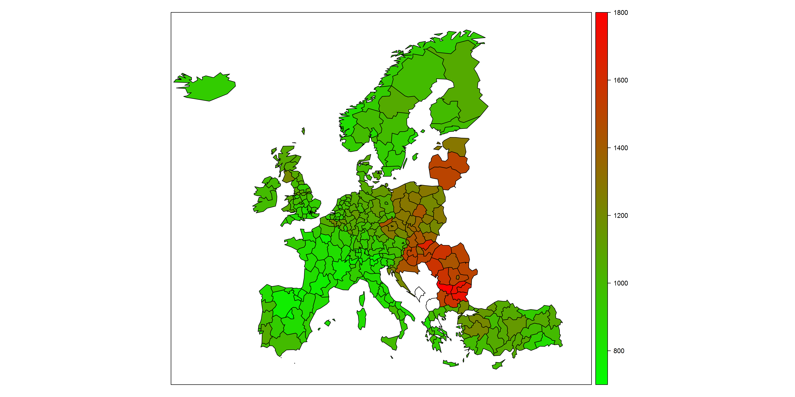

4 Megfigyeléses vizsgálatok a gyakorlatban
Fontos előrebocsátani, hogy ez egy olyan komplex téma, így a mostani cél a legkevésbé sem a módszerek teljeskörű bemutatása. A cél ezzel szemben annak szemléltetése, hogy egyáltalán van ilyen módszer – mert ez sem nyilvánvaló! Mégis, hogyan tudjuk megmondani, hogy mi a légszennyezettség valódi hatása a mentális betegségekre, ha egyszer a légszennyezettebb területen élők nem csak a légszennyezettségnek kitettségben térnek el a többiektől?
Nagyon fontos megismételni, hogy e módszerek, és egyáltalán, bármilyen szóba jövő módszer kizárólag azon zavaró változók hatását tudja kiszűrni, amikről egyáltalán eszünkbe jut, hogy confounderek, és amiknek az értékét le tudjuk mérni (azaz meg tudjuk határozni, fel tudjuk jegyezni mindegyik alanyra). Ezeket sem biztos, hogy tökéletesen szűrik, de az biztos, hogy amiről nincs információnk, pláne amiről eszünkbe sem jutott, hogy confounder, azt nem tudjuk kiszűrni – szemben a randomizálással! Hát persze: ez volt a kísérlet hatalmas előnye.
Lássunk tehát néhány ilyen módszert! Az áttekintés olyannyira nem lesz teljeskörű, hogy még a legnépszerűbb módszer, az ún. többváltozós regressziós modellezés sem fog szerepelni benne – a cél ugyanis nem a részletek megismertetése, hanem az, hogy érezhető legyen a „dolog íze”, hogy hogyan lehet egyáltalán ezt a problémát leküzdeni.
4.1 A rétegzés
Az érdekes az, hogy az egyik legkézenfekvőbb módszert tulajdonképpen már láttuk! Idézzük fel a táblázatot, melyben a képzeletbeli légszennyezettség/mentális betegség kutatásunk eredményeit közöltük a cikksorozat korábbi részében:
| Légszennyezett | Nem légszennyezett | Összesen | |
|---|---|---|---|
| Rossz szocioökonómiai helyzet | 6% (3300/55000) | 6% (375/6250) | 6% (3675/61250) |
| Jó szocioökonómiai helyzet | 1% (450/45000) | 1% (935/93750) | 1% (1385/138750) |
| Összesen | 3,8% (3750/100000) | 1,3% (1310/100000) | 2,5% (5060/200000) |
Látszik, hogy az alsó Összesen sor – a naiv vizsgálat – hibás eredményt szolgáltat: úgy tűnik belőle, hogy a légszennyezettség növeli a mentális betegségek előfordulását: 3,8% az 1,3%-kal szemben. Igen ám, de ha megbontjuk a számításokat a confounder szerint, azaz a zavaró változó minden lehetséges értékére külön-külön is elvégezzük az összes számítást, akkor helyes eredményt kapunk: 6% a 6%-kal szemben és 1% az 1%-kal szemben. Így ugyan már nem egy eredményünk van, hanem kettő, de látható belőlük, hogy a légszennyezettségnek nincs valódi hatása.
Az orvosi irodalomban ezt a módszert szokás rétegzésnek hívni. (A szakzsargonban ugyanis az ilyen megbontással kapott csoportokat rétegnek hívják: az emberek szocioökonómiai helyzet szerint a „jó” és a „rossz” réteg valamelyikébe tartoznak a mostani példánkban.)
A módszer tehát pofonegyszerű: bontsuk a confounder szerint rétegekre a mintánkat, és egyszerűen annyit tegyünk meg, hogy az elemzést nem összességében, hanem rétegenként külön-külön hajtjuk végre.
Sajnos a gyakorlatban ezt sokszor könnyebb mondani, mint megcsinálni. A módszer hatalmas előnye, hogy semmilyen feltételezéssel nem él arra vonatkozólag, hogy az egyes változók milyen kapcsolatban vannak egymással, tehát akármilyenben is vannak, mindenképp működik, de ennek ára van. Az egyik probléma, hogy a valóságban nem egy confounder van: nézzük meg a cukorbetegség és a császármetszéssel születés példáját, nem kevesebb, mint 6 confoundert soroltunk fel. A helyzet valójában ennél is rosszabb: a valóságban ugyanis általában nem tudhatjuk, hogy mik a confounderek! Orvosi megfontolások, korábbi irodalmi adatok stb. alapján tippelnünk kell, azaz valójában inkább potenciális confounderekről beszélhetünk, melyek hatását mind szűrni kell, hiszen nem tudhatjuk, hogy közülük mely(ek) az igazi zavaró változó(k). Emiatt vannak olyan vizsgálatok is, ahol akár 10, 20 vagy annál is több confoundert akarunk kiszűrni.
Hogy ez miért probléma? Vegyük a legegyszerűbb esetet, amikor mindegyik zavaró változó két réteget határoz meg. A gond az, hogy ha egyszerre kettő szerint rétegzünk, akkor már 4 rétegünk lesz (például férfi – cukorbeteg, férfi – nem cukorbeteg, nő – cukorbeteg, nő – nem cukorbeteg), ha 3 szerint, akkor 8, és így tovább, a rétegek száma mértani haladvány szerint nő, képzelhetjük, hogy mennyi lesz, ha 20 zavaró változó szerint szűrünk… És ez még a legegyszerűbb eset, amikor mindegyiknek két kimenete van, még nagyobb szorzótényezők jönnek be, ha valamelyik kettőnél több értéket vehet fel. Külön probléma a folytonos változók kérdése, tehát azok, amelyeknek nem csak néhány kategória lehet a kimenete, hanem egy szám, mint például az életkor. Itt muszáj csoportosítanunk (pl. 0-10 év, 10-20 év stb.), csakhogy ezt meg lehetetlen jól megcsinálni: ha túl tág intervallumokat veszünk fel, akkor egybemosunk akár nagyon különböző dolgokat (az előbbi csoportosítás esetében egy 1 napos újszülött és egy 9 éves kisiskolás ugyanolyan életkorú!), ha viszont erre tekintettel szűk intervallumokat veszünk fel, akkor rengeteg rétegünk lesz. Mindezeket együtt szemlélteti az 4.1. ábra annak példáján, hogy a dohányzás hogyan hat a szívinfarktus utáni túlélésre.
A probléma igazából kettős. Egyrészt rétegzés esetén nem egyetlen eredményt kapunk, hanem sokat, adott esetben nagyon sokat – ez minden mást félretéve sem túl praktikus, ahogy az előbbi ábra is mutatja, amin jól érzékelhető, hogy a rétegek számának növekedésével egyre áttekinthetetlenebbé válik a helyzet. De a helyzet ennél rosszabb, ez ugyanis nem csak kényelmi problémákat okoz: ha nagyon sok rétegünk van, akkor az egyes rétegekbe egyre kevesebb alany fog jutni, hiszen ők is szétoszlanak a rétegek között. Nagyon könnyen lehet, hogy még egy egyébként sok alanyt bevonó vizsgálatban is kevés 60 és 70 év közötti, cukorbeteg, nem magasvérnyomásos, korábbi infarktuson átesett, de stroke-on át nem esett, dohányzó nő lesz… Ami azért gond, mert ekkor a rétegenként külön-külön végzett vizsgálatok nagyon kevés alany adatait fogják felhasználni, ami miatt az eredményük bizonytalan lesz! Nagyon sok réteg esetén az egyes rétegekbe egyre kevesebb beteg jut, így azokból csak egyre bizonytalanabbul lehet becsülni a túlélési görbéket – ez a magyarázat arra, hogy a jobb alsó ábrán miért néznek ki egyes görbék olyan furcsán: van köztük, amit mindössze 5-10, sőt, 2 vagy 3 betegből kellett megbecsülni (noha az egész adatbázis több ezer beteget tartalmaz). Jól látszik, hogy az életkor milyen problémás önmagában is: 5 évet egybemos ez a felbontás – de még így is 9 kategóriát ad.
4.2 A standardizálás
E problémák közül az első kezelésére van egy egyszerű megoldás, ami ugyan nem tekinthető korszerűnek, de ennek ellenére, jórészt történeti okokból, számos területen használják, így érdemes megismerkedni vele – ez a standardizálás.
Az alapötlet bemutatásához vegyük elő a svéd/chilei halandóság példáját. Emlékeztetőül: Svédországban 2005-ben 10,2 halálozás történt ezer lakosra vonatkoztatva, Chilében 5,5/ezer fő volt a halandóság. Mint láttuk, a meglepő számok magyarázata a confounding: a zavaró tényező az életkor, ugyanis külön-külön vizsgálva minden életkorban kisebb a svéd halandóság (ahogy azt vártuk is!), csak épp nagyon más a két ország korfája: a chilei lakosság összetételében sokkal-sokkal több a fiatal. Így amikor a halandóságot számoljuk, akkor Chilében a fiatalkori, sokkal jobb értékek (mert azért a chilei fiatalok halandósága még mindig jobb, mint a svéd időseké – ezen múlik a dolog) nagyobb súllyal esnek latba, ezért lesz ott alacsonyabb a halálozási ráta. Az előző részben ezt grafikusan láttuk, most nézzük számszerűen (a jobb szélső oszloppal egyelőre ne törődjünk):
| Korcsoport | Halandóság adott korcsoportban [/ezer fő/év] | Létszám megoszlás (korfa) [%] | |||
|---|---|---|---|---|---|
| Svédország | Chile | Svédország | Chile | Segi-Doll standard | |
| 0-14 | 0,28 | 0,73 | 17,6 | 24,2 | 31,0 |
| 15-39 | 0,49 | 0,90 | 32,3 | 39,9 | 37,0 |
| 40-44 | 1,11 | 1,86 | 6,8 | 7,8 | 6,0 |
| 45-49 | 1,83 | 2,80 | 6,5 | 6,6 | 6,0 |
| 50-54 | 3,14 | 4,27 | 6,5 | 5,3 | 5,0 |
| 55-59 | 5,04 | 6,86 | 7,1 | 4,4 | 4,0 |
| 60-64 | 8,20 | 11,33 | 6,0 | 3,5 | 4,0 |
| 65-69 | 13,49 | 16,86 | 4,5 | 2,9 | 3,0 |
| 70-74 | 21,63 | 28,92 | 3,9 | 2,2 | 2,0 |
| 75- | 82,33 | 76,15 | 8,8 | 3,5 | 2,0 |
Ha valaki szeretné, ellenőrizheti is a számításokat: \(0,176 \cdot 0,28 + 0,323 \cdot 0,49 + \ldots + 0,088 \cdot 82,33 = 10,2\), és hasonlóan Chile esetében.
Erre mondhatjuk, hogy ez egy szokásos demográfiai táblázat, de ha ilyen szemmel megnézzük, akkor ez igazából nem más, mint egy confounding megoldása rétegzéssel! A zavaró változó az életkor volt, e szerint rétegeztünk, és ez csakugyan meg is oldotta a problémát: jól látszik, hogy Svédország gyakorlatilag minden korcsoportban jobb halandósági mutatókkal rendelkezik.
És gyönyörűen látszik a rétegzés utolsóként említett problémája is: nem egyetlen eredményt kapunk. Milyen kényelmes volt (helytelenül) azt mondani, hogy „Svédország: 10,2, ezzel szemben Chile 5,5”, most ezzel azt tudjuk csak (helyesen) szembeállítani, hogy „0-14 év között Svédország 0,28, ezzel szemben Chile 0,73, 15-39 év között Svédország 0,49, ezzel szemben Chile 0,90, 40-44 év között…” – nem valami praktikus! Mennyivel jobb lenne, ha tudnánk egyetlen, de mégis korrekt számot mondani!
Szerencsére erre a problémára van megoldás. A trükk az lesz, hogy első lépésben rétegzünk, azaz szétbontunk, csakhogy utána csinálunk egy második lépést, amelynek a keretében újra összetesszük a rétegeket, hogy egyetlen számhoz jussunk eredményként – csakhogy ezt az összerakást okosan hajtjuk végre! Mi volt a probléma, ami a rossz eredményre vezetett? Az, hogy az egyes korosztályokra jellemző halandóságokat különböző korfákkal súlyozva adtuk össze: Chilében a fiatalkori, Svédországban az idősebb életkorbeli halandóságok kaptak nagyobb súlyt. A megoldás kínálkozik: számoljunk ugyanúgy, mint eddig, de használjuk ugyanazt a korfát mindkét országnál! Hiszen a „rossz” számok is felfoghatóak úgy, mint amik ilyen lebontás-összerakás módszerrel jönnek ki, jelesül, ha két különböző korfát használunk; legyen akkor az említett okos összerakás az, ha ugyanazt a korfát használjuk. Például a svéd korfát használva immár mindkét országban, a Svédországra kapott halandóság 10,2 (értelemszerűen), a Chile-re kapott halandóság \(0,176 \cdot 0,73 + 0,323 \cdot 0,90 + \ldots + 0,088 \cdot 76,15 = 10,8\). Hoppá! Máris helyreállít a világ rendje, a chilei érték rosszabb. Persze használhatjuk a chilei korfát is, ekkor Svédországra kapunk 4,9-et – megint csak rendben vagyunk, hiszen Chilére pedig értelemszerűen 5,5 marad az eredmény! Természetesen használhatnánk mindkét országra Magyarország korfáját, Trinidad és Tobago korfáját, Középfölde korfáját, a lényeg, hogy ugyanazt használjuk mindkét országnál. Más kérdés, hogy a gyakorlatban ez így nem túl célszerű, hiszen ha mindenki mást választ, akkor teljesen összehasonlíthatatlan eredmények jönnének ki, sokkal szerencsésebb megállapodni egy közös korfában, hogy aztán mindenki azt használja – így a különböző kutatások eredményei egymással is összevethetőek lesznek. Ilyen megállapodások léteznek is, standard korfának szokás hívni őket; a táblázat jobb szélső oszlopa az egyik ilyen népszerű standardot, a Segi-Doll korfát tartalmazza.
Ha ezzel számolunk, akkor Svédországra \(0,31 \cdot 0,28 + 0,37 \cdot 0,49 + \ldots + 0,02 \cdot 82,33 = 3,6\)-ot, Chile-re pedig \(0,31 \cdot 0,73 + 0,37 \cdot 0,90 + \ldots + 0,02 \cdot 76,15 = 4,4\)-et kapunk. Íme, a rossz módszernek megfelelő egyszerűség (két, minden további nélkül összevethető szám), de korrekt eredménnyel! Ezt az eljárást szokás direkt standardizálásnak nevezni, az így kapott mutatót pedig standardizált mutatónak, jelen esetben tehát standardizált halálozási rátának. (Ezt fontos hozzátenni, hiszen ezek nem igazi halálozási ráták, lévén, hogy az adott korcsoport halandóságát nem az országban neki megfelelő aránnyal szoroztuk, tehát lényegében egy fiktív helyzetet számoltunk ki. A számértéknek így nincs önálló értelme, csak összehasonlításban értelmezhető.)
Ha megegyezünk, hogy minden ország például a Segi-Doll korfához standardizálva közli a halálozási rátáját, akkor az így kapott eredmények már az – adott esetben rettenetesen különböző – életkori összetételek ellenére is összevethetőek lesznek! Természetesen az sem kötelező, hogy az összes halálozást számoljuk, nyugodtan nézhetjük csak egy konkrét betegségből előforduló halálozásokat, sőt, vehetjük a megbetegedések fellépését is. A probléma ekkor is ugyanúgy jelentkezne, ha a betegség előfordulása összefügg az életkorral (ami meglehetősen tipikus) és az országok korfái lényegesen eltérnek. Az egyszerűen kiszámolt megbetegedési vagy halálozási ráták – szép néven egyébként ezeket nyers mutatóknak szokták nevezni – nagyon félrevezetőek lehetnek ez esetben, de a standardizált mutatók használata megoldja ezt a problémát.
Legalábbis az életkorra vonatkozóan! Mert ne felejtsük el, hogy ezzel csak az életkori eltérések hatását szűrtük ki, semmi mást. Természetesen, ha nem egy, hanem két szempont szerint tudunk rétegezni, mondjuk életkor és nem szerint is le tudjuk bontani a halálozásokat, a standardizálós trükk ekkor is bevethető, hogy mégis visszajussunk egy – immár nemi és életkori eltérésekre egyaránt korrigált! – számhoz, ehhez persze ekkor már a standardnak is életkor és nem szerint bontottnak kell lennie. Ha még több szempont van, akkor a helyzet pontosan ugyanúgy bonyolódik, mint a rétegzésnél láttuk, hiszen a standardizálás első lépése is – természetesen – egy rétegzés.
Példának okáért, az 4.2. ábra mutatja az európai országok halálozási rátáit nyersen és standardizálva. Látszik az egészen drámai hatás: a nyers rátákból azt gondolhatnánk, hogy Törökországban a legjobb a halandósági helyzet, a többi ország között pedig nincsenek túl nagy különbségek. A standardizáltból viszont kiderül, hogy valójában Törökország helyzete egyáltalán nem kiugróan jó (nem halnak meg sokan, de a fiatalabb lakosság ellenére sem kifejezetten alacsony a halálozás), a többi ország között pedig nagyon is vannak különbségek (ugyan hasonló arányban halnak meg, csakhogy közben eltérő a korfa!).


Természetesen a probléma nem csak különböző országok összevetésekor merülhet fel, hanem magasabb szinten (például különböző kontinensek összevetése) vagy alacsonyabb szinten (egy ország különböző megyéinek összevetése) is, sőt, akár akkor is, ha ugyanazt a területi egységet vetjük össze, de eltérő időpontokban. A lényeg, hogy ha eltérnek a korfák, akkor bajban leszünk, feltéve, hogy a kor hat a megbetegedési vagy halálozási kockázatra, ezért a standardizálás használata nagyon elterjedt az epidemiológiában. Példának okáért, a 4.3. ábra mutatja a magyarországi vastagbélrákos esetek előfordulásának nyers incidenciáját a Nemzeti Rákregiszter adatai alapján. (Ezekkel az ábrákkal az Olvasó maga is kísérletezhet, például kipróbálhatja más időszakokra vagy más tumor-típusokra a https://research.physcon.uni-obuda.hu/ címen elérhető Rákregiszter vizualizátor alkalmazás segítségével.)
Jól látható, hogy a nyers ráták szerint meglehetősen drámai romlás mutatkozik 2000 és 2018 között: az 50 körüli érték 60 fölé nőtt, ez több mint 20%-os emelkedés!
Igen ám, de nézzük meg mit látunk, ha korcsoportonként külön-külön nézzük az előfordulást (4.4. ábra)! Rögtön feltűnik, hogy egyetlen korcsoportban sem volt érdemi romlás.
Ez meg mégis hogyan lehet?! A fentiek alapján már biztos mindenki rávágja a választ: öregedett a népesség! Ezt a Rákregisztertől függetlenül tudjuk (az expozíció, tehát, hogy melyik évben vagyunk, összefügg a zavaró változóval, az életkorral, 4.5. ábra) és a növekvő életkor emeli a vastagbélrák kockázatát (a zavaró változó hat a végpontra, 4.6. ábra). Ne feledjük, a problémához mindkét tényező egyidejű jelenléte kellett!
Kész is tehát a confounding: valójában a vastagbélrákosok számának növekedése, legalábbis nagy részben, egyszerűen annak tudható be, hogy idősebb lett a népesség! Az 4.7. ábra ezt mutat meg, immár számszerű pontossággal: a standardizált megbetegedési rátákból látható, hogy szó nincs ennyire drámai – vagy egyáltalán, bármilyen érzékelhető – növekedésről.
Bár a standardizálás leggyakrabban a fenti kontextusban, különböző országok megbetegedési és halálozási mutatóinak összevetése kapcsán jön elő, valójában egy teljesen általános megoldási lehetősége a confoundingnak. Térjünk vissza az eredeti példánkra! A probléma, ilyen szemmel ránézve, hogy bár mindkét csoportban ugyanúgy 6 és 1% a megbetegedési arány mindkét rétegekben, a 6 és 1%-ot nagyon eltérő súlyokkal kombináljuk össze: a légszennyezett területen élő csoport esetében a kevésbé tehetősek 6%-os értéke 55% súlyt kap, a tehetősebbek 1%-os száma pedig 45%-ot (ellenőrizzük le: \(0,55 \cdot 6 + 0,45 \cdot 1 = 3,8\%\)), addig a nem légszennyezett területen felnövő csoport esetében a 6% mindössze 6,25% súlyt kap (itt kevésbé tehetős lakosság él – ugye épp ez volt az egyik oka a confoundingnak), az 1% viszont 93,75%-ot (\(0,0625 \cdot 6 + 0,9375 \cdot 1 = 1,3\%\)). A probléma tehát itt is az, hogy nagyon más „korfával” (szocioökonómiai helyzet-fával) kombináljuk össze az egyes rétegek értékeit. Hogy egy, de immár korrekt számba sűrítsük a probléma megoldását, egészítsük ki a rétegzést standardizálással! Ahelyett, hogy különböző súlyokat használunk, válasszunk egy közöset, legyen ez a Nagy és Alapos Standard IPM módra (röviden: NASI). A NASI-ban a rossz szocioökonómiai csoport aránya legyen 30%, a jóé 70%. Ha ezek után kiszámoljuk a mentális betegségek előfordulását mindkét csoportban, de immár egységesen a NASI-t használva, akkor a légszennyezett területen felnövő csoportra \(0,3 \cdot 6 + 0,7 \cdot 1 = 2,5\%\)-t, a nem légszennyezettre \(0,3 \cdot 6 + 0,7 \cdot 1 = 2,5\%\)-ot kapunk. Ezek lesznek a standardizált mentális megbetegedési ráták a két területen – ezekből már jól látszik, hogy valójában nincs különbség! A 3,8%-os és 1,3%-os (nyers) ráták közti különbség teljes egészében a szocioökonómiai helyzeten keresztül megvalósuló confoundingból jött, a légszennyezésnek nincs valóságos hatása a gyermekek mentális megbetegedéseire.
Összefoglalva: a standardizálás legalább azt az egy problémáját megoldja a rétegzésnek, hogy áttekinthetetlen, mert nem egy, hanem sok eredményt ad – azon az áron, hogy adott esetben az így kapott eredmény a standard megválasztásától is függeni fog.
4.3 Kitérő arról, hogy miért jó, ha egy országban sokan halnak meg rákban
Ezen a ponton érdemes kitérni pár kérdésre, melyek ugyan nem kapcsolódnak a szorosan vett témánkhoz, de nagyon logikusan következnek a fentiekből, és meglehetősen tanulságosak – nem is feltétlenül (tisztán) orvosilag.
Az első, hogy a betegségek nyers előfordulási rátája, különösen, ha hosszú időtávot nézünk, vagy nagyon különböző országokat hasonlítunk össze, általában nem túl értelmes mutató. Ezt a fentiekben láttuk, ám érdemes jobban is belegondolni, hogy a végiggondolatlan használata milyen – akár első ránézésre teljesen paradox – helyzetekhez vezethet. Az egyik legjobb példa erre: miért kell néha örülni annak, ha egy országban sokan halnak meg rákban?
Az előbbieket átgondolva adódik a válasz: minden olyan betegség esetén, melynek a kockázata nő az életkor növekedtével (ez számos ráktípusra igaz), a növekvő előfordulásnak nem csak az lehet az oka, hogy romlik a népegészségügyi helyzet, hanem az is, ha tovább élnek a lakosok! Szváziföldön például szinte ismeretlen a rákos halálozás, de ennek annyira valószínűleg nem örülnek, ugyanis a fő oka nem a remek szváziföldi onkológiai helyzet, hanem egész egyszerűen az a tény, hogy az AIDS viszi el a lakosok majdnem kétharmadát, többségüket borzasztó fiatalon. (A szülőnők majdnem fele HIV-fertőzött, a válság legsúlyosabb pontján, a 2000-es évek elején a születéskor várható élettartam 45 év alá esett, majdnem 10%-os csecsemőhalandósággal.) Azaz: egyszerűen nem élnek addig az emberek, hogy elkezdjenek rákosak lenni! Hiszen az, vagy legalábbis számos fajtája, idősebb korban jelent igazán kockázatot. A szváziföldi népegészségügy roppant boldog lesz, ha majd azt látja, hogy egyre többen halnak meg rákban – ez ugyanis azt jelenti, hogy sikerült megfékezni a HIV/AIDS-járványt.
A másik dolog, aminek pontosan emiatt nincs túl sok értelme (önmagában) az a haláloki összetétel. Ez alatt azt értik, hogy az elhunytak mekkora hányada halt meg rákban, szívinfarktusban stb., a közbeszédben gyakran hangzanak el olyan kijelentések, hogy „Úristen, a helyzet drámai, a magyar lakosok 25%-a rákban hal meg!”.
Na és? Én személy szerint nagyon örülnék neki, ha a magyar lakosság 100%-a rákban halna meg – feltéve, hogy ezt 130 éves korukban teszik!
A probléma tehát ma Magyarországon nem az, hogy túl sokan halnak meg rákban, hanem az, hogy túl korán halnak meg rákban!
Eleve, a „túl sok” jelzőnek, és ebből adódóan az ilyen politikusi „az a célunk, hogy kevesebben haljanak meg rákban Magyarországon!” jelszavaknak túl sok értelmük nincs: magától értetődően, ha kevesebben halnak meg rákban, akkor automatikusan, szükségképp többen halnak meg infarktusban, agyér-betegségben és egyéb halálokokban… (Mindaddig legalábbis, amíg nem sikerül megoldani azt a jelenleg kissé bonyolultnak tűnő orvosi problémát, hogy valamiben mindenki meghal előbb-utóbb.) Ha valaki azt mondja, hogy „az a célunk, hogy minél kevesebben haljanak meg rákban Magyarországon!” az tökéletesen egyenértékű azzal, mintha azt mondaná, hogy „az a célunk, hogy minél többen haljanak meg nem rákban Magyarországon!”… A valódi cél tehát nem az, hogy kevesebben haljanak meg, hanem az, hogy később haljanak meg az emberek (kivéve persze, ha valakinek speciális preferenciája van, ami miatt egy bizonyos halálokban jobban vagy kevésbé jobban szeretne meghalni, mint a többiben).
Ez elvezet minket egy mutatóhoz, ami a „sokan halnak meg rákban” szintű közbeszédben kevés helyet kap, ami azért különösen sajnálatos, mert valójában egyáltalán nem bonyolult módon ragadja meg a fenti problémát. Ez nem más mint az elvesztett potenciális életévek (általánosan használt angol rövidítéssel: YLL) fogalma. A YLL számítása tulajdonképpen pofonegyszerű: kijelölünk egy életkort, ez tipikusan 70 év, és minden egyes halálozásnál megnézzük, hogy az elhunyt mennyivel korábban halt meg – ez lesz az elvesztett potenciális életévek száma az ő esetében. Egy csecsemőhalálozásnál ez tehát 70 év, ha valaki 60 évesen hal meg, akkor 10, ha 70 évesen, akkor 0, ha 71 évesen (vagy bármikor később), akkor ugyanúgy 0. Ha ezt összeadjuk az összes adott országban adott évben elhunytra, akkor megkapjuk, hogy ott mennyi volt a teljes potenciális életév-veszteség. Ezt tipikusan 100 ezer lakosra leosztva szokás közölni, Magyarországon 2016-ban az OECD adatai szerint 4806 év/100 ezer fő volt. Ez első ránézésre meglehetősen abszurd mutató („akkor az nem is számít, ha 70 éves korom után halok meg?!” – kérdezhetné valaki), ám második ránézésre már látható, hogy valami nagyon fontosat mutat meg. Megtehetjük ugyanis, hogy az elvesztett potenciális életéveket is kiszámoljuk halálokonként, és ez olyat fog felfedni, amit az egyszerű haláloki összetétel elfedett: azt, hogy melyik halálok öli korán a lakosokat! Magyarországon például a KSH utolsó, 2007-es elemzése szerint a daganatos megbetegedések felelnek a nagy betegségcsoportok közül a legnagyobb potenciális életév-veszteségért, miközben a halálokok között csak másodikak a szív-érrendszeri halálozások mögött. Még érdekesebb (de ha végiggondoljuk, teljesen logikus!), hogy a szándékos önártalom a halálokok között 2%-ot sem ér el, de potenciális életév-veszteségben még az egyébként halálozások 10%-áért felelős agyérbetegségeket is megelőzi! Hogy ez miért fontos? Azért, mert segít végiggondolni, hogy az egészségügy – mindig szűkös – erőforrásait hová érdemes csoportosítani: egyáltalán nem biztos, hogy arra racionális, amiben sokan halnak meg!
A kérdésnek persze a valóságban számos, nem könnyen megválaszolható további problémája is van (megelőzhetőség figyelembevétele, költségek figyelembevétele, nem halálos, de életminőséget rontó állapotok figyelembevétele, a különböző életkori halálozások súlyozása stb.), de itt most a cél az alapelgondolás bemutatása volt.
Láttuk tehát, hogy kísérletes adatokból hogyan tudunk okozati viszonyokra következtetni (randomizálással), és most már azt is láttuk, hogy hogyan tudjuk ugyanezt megtenni megfigyeléses adatokkal is. A problémáknak azonban még nem értünk a végére! Van egy kérdés, amiről még egyáltalán nem beszéltünk: hogyan vesszük figyelembe a véletlen ingadozás hatását?